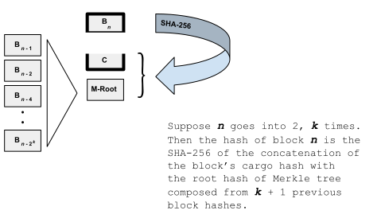

Crums Timechain (Alpha)
A Crums timechain implements a commitment protocol for witnessing SHA-256 hashes. A chain consists of a sequence of fixed-sized (64-byte) time-blocks. Each block spans a fixed time interval, and records the hashes witnessed in that interval. There are no gaps, so each block no. maps to a representative UTC time since the chain's genesis block. The set of hashes witnessed in each block is actually encoded as a single 32-byte value called the cargo hash, which is usually (when multiple hashes are witnessed) the root hash of a Merkle tree.
Additionally, each block "redundantly" records the hash of the block itself. The reason why will soon become apparent, but for now, consider it as a form of memo-ization: the hash of the block depends on its cargo hash, and that of every block before it. Recording the block's hash this way does not obviate the need to verify the hash. Rather, it allows us to quickly construct a hash proof that a given cargo hash belongs at a certain block no. in a given timechain. (But since our hash proofs are self verifying, every time we construct one, the memo-ized block hashes are validated for consistency.)
Block Hash Declaration = Commitment
Since the hash of block n depends on the contents of all previous blocks in the chain, declaring the hash of block n amounts to a commitment of the state of the chain at n blocks. The recipe for calculating the nth block's hash is described below. However, by themselves, block hashes don't prove anything. A chain needs corroborating evidence to establish how old its blocks are.

The exact mechanics of the declaration are presently left open: it can be bootstrapped with some sort of a durable announcement, e.g. on GitHub, Twitter, a website, or even a blockchain. Or, on yet other timechains. This latter choice will be a topic of subsequent releases. (Discovery protocols, automation, and proof structures).
Conversely, if a block in a timechain is witness to a beacon-hash, then a hash proof asserting so establishes that that block and every subsequent one after it is no older than the beacon hash. Here, a beacon hash is a value that couldn't have been calculated in advance. Examples include the NIST Randomness Beacons, the block hash of a recent Bitcoin block, or, as developed here, the hash of the latest block of another timechain.Hash Calculation
In most blockchain designs, each block is linked to its predecessor via a special cell designated for recording the hash of the previous block. Its linked structure resembles a singly linked list, except here, instead of pointers into memory, we have hash pointers -- pointers to value, if you will. A Crums timechain also employs hash pointers. However, unlike most blockchains, blocks do not reserve any special cells for recording the hashes of the predecessor blocks they reference. Rather, a block's hash pointers to previous blocks are implicitly manifest by how the block's hash is calculated. A key differentiator is that it models not just a singly linked list, but also a multiply linked structure resembling a skip list, which we call a skip ledger.
The number of (implicit) hash pointers in a block is uniquely determined by the block-number n. (Unlike the skip list search structure, linkage is not probabilitstic.) Block no.s start from 1, and if 2k is largest power of 2 that divides n, then there are k + 1 hash pointers in block n referencing blocks n-1, n-2, n-4, .. , n-2k. So on average each block only references 2 previous blocks. Thus, again on average, a block's hash can be derived from 3 SHA-256 hashes: the cargo hash, and the hash of 2 previous blocks.
The point behind calculating block hashes this way is that it allows us to construct concise hash proofs linking any high block no. to a lower block no.: there is a shortest (hash proof) path that scales with the logarithm of the difference of their block no.s. For example, a hash proof linking block [534] to the genisis block [1] need only contain information about (constructing hashes for) the following block no.s:
[1, 2, 4, 8, 16, 32, 64, 128, 256, 512, 528, 532, 534]
This property, in turn, allows timechains to efficiently declare not just their latest block-hash, but also their provenance, in terms of a hash proof from the genesis block to the latest block. These are called [block] state proofs. An important property of state proofs is that newer state proofs can be independently verified (offchain) that they share common lineage with older state proofs from the same chain.
More generally, the shortest (minimum) hash-proof path connecting a set of block no.s is called a [block] skip path (for those block no.s). An important property of skip paths is that any other (longer) hash proof linking those blocks together must necessarily include the block no.s already in the skip path (i.e. they cannot be skipped over in a hash proof connecting the blocks in the set).
Sentinel: Block Zero
Block no.s start at 1. Technically, every chain also has an abstract zero'th block, called the sentinel block. The hash of block-zero is identically defined as a string of zero bits, 32-bytes wide. The chain's blocks connect to the sentinel block at a maximum of 63 levels (it's first linked from blocks 1, 2, 4, 8, and so on); its cargo hash is undefined. The exact choice of value for the sentinel block's hash value (all zeroes) may seem somewhat arbitrary. However, zeroed sentinel-block hash models how the protocol counts blocks in the chain and how that count is verified in the chain's block proofs.
Cargo Chain
A Crums timechain is supported by a background service (called a notary in the codebase) that uses an emphemeral background structure called the cargo chain. Each cargo block is related to a unique timechain block and collects the hashes witnessed in that block into a Merkle tree. The tree's root hash is recorded in the corresponding timechain block as the block's cargo hash.
A cargo block doesn't exist forever: it's supposed to last at least as long as the timechain's advertised block-retention policy. When a user first submits a SHA-256 to be witnessed, they receive a receipt in the form of a crum, which is a tuple pairing the 32-byte hash, with an 8-byte UTC signifying the witness time. The crum is recorded in the cargo block associated with its witness time. (The block no. can be inferred from the crum's witness time.) Seconds later (or minutes, depending on the timechain's block-granularity) when the block-time has elapsed by a safe margin, the crums collected in the cargo block are built into a Merkle tree and its root hash is committed as the cargo hash in the timechain block at the same block no. From here on out, while the cargo block still exists, a user can retrieve a persistent hash proof asserting the crum's membership in the timechain block it belongs in.
Crumtrail (Witness Proof)
A crumtrail is a hash proof asserting a hash was witnessed by a timechain. It is composed of a crum along with two hash proofs:
- Cargo Proof. A Merkle proof asserting a Merkle tree's root hash with the SHA-256 of a crum (its 40-byte representation) as one of its leafs (members). This root hash is understood to be the cargo hash of a timechain block. The timechain's block no. is inferred from the crum's UTC field.
- Block Proof. A skip path in a timechain that includes the block no. inferred above and whose cargo hash at that block no. matches the root hash in the Merkle proof above.
When a crumtrail is first retrieved from the [notary] service, its block no. (the block no. it was witnessed in) lies near the tail (end) of the timechain. As time elapses and the timechain accumulates new blocks, the crumtrail's block proof can be updated to include (link to) later timechain blocks. The service dispenses block proofs linking any set of (existing) timechain block no.s on demand. But note, block proofs in crumtrails from the same timechain share a good deal of common block information. As a result, when archived together, the block proofs of older crumtrails can often be extended to those used in the newer crumtrails.
Chain Parameters
A timechain's block resolution and its block boundaries (the time one block begins and another ends) are fixed at inception. Depending on use, different resolutions may be appropriate.
Bin Exponent
Recall a timechain is composed of a contiguous sequence of equal-duration blocks. The duration of each of its blocks in milliseconds is expressed as a power of 2, called the bin exponent. Presently, the bin exponent can be no less than 8 (quarter sec + 6 millis) and no greater than 26 (about 18h:38m).
The bin exponent e also models bin boundaries (i.e. where blocks begin and end). A block's UTC start time (in milliseconds) begins at a value with its e- rightmost bits set to zero and ends at a UTC value with the same left-side bits as in the start time, but with its e- rightmost bits set to one.
Inception UTC
The genesis block is numbered 1 (not zero). The chain's inception UTC is the smallest (first) UTC value that falls in the genesis block.
Chain Dynamics
Finally, we analyze the maintenance of timechains, adverserial strategies and/or dynamics, and explore methods for quantifying a chain's trustworthiness.
Adverserial Actors
Since a timechain is little more than an ordered sequence of opaque hashes (more opaque than its witnessed inputs) there's little opportunity for a malicious user to manipulate chain state to their advantage. The only adverserial play in this space concerns time itself (how a timechain's block no. maps to UTC time), and that play is only available to timechain operators.
Truth Model
The only "Truth" timechains concern themselves with is time itself. While the evolution of a timechain is driven by its users, its operation is neither decentralized, nor consensus-driven. To the degree feasible, we try to avoid leaning on consensual mechanisms for establishing time: the aim is to allow users of a private timechain still be able to prove the age of things to the world at large.
Instead of purely by concensus, the accuracy (or inaccuracy) of how a timechain's block no.s map to real UTC times will be determined by factuals (or counter-factuals). As mentioned before, an example of a factual is a block being witness to a beacon hash that is somehow known to be no older than a certain date. One way to generate such a beacon hash is to source it from the hash state of a collection of other timechains: if at least one of the timechains is an honest actor, then it'll be a good beacon. Conversely, a timechain may periodically record it's own state (hash) on a collection of other chains in order to establish its blocks are no younger than a certain date.
A Note On Forking
The timechain itself is a compact file. While the REST API does not expose the file directly, the chain can be copied and forked. The chain file is the timechain owner's property and they can probably stipulate conditions on how it can (or cannot) be used. From an operational standpoint, however, it doesn't matter if a chain is forked. The system is designed to work better the more timechain servers are running on the open web, so forking, condoned or not, is not counterproductive.
On Scaling
The service uses the file system directly as its data store (a directory). It is designed so that multiple instances of the service can concurrently run against the same directory: e.g. a network mount point shared across multiple VMs. This property in turn helps with keeping the service durable and makes it possible to scale up (down) with user load by spinning up (down) new instances.
Each instance of the service (this instance, for instance) supports multiple concurrent readers and writers. Processing is I/O bound: by the file system, and by the network layer. Presently, the HTTP implementation leans on the new Java virtual threads, which effectively delivers non-blocking network I/O. As for file I/O bottlenecks, there are a number of caching opportunities future versions make take advantage of. The Alpha version does not cache any data: its only source of data is the file system.
© 2020-2024 crums.io